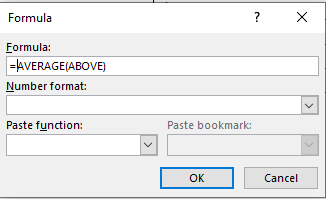

- Utilizarea şabloanelor pentru tabele
- Utilizarea comenzii inserare tabel
- Utilizarea comenzii desenare tabel
- Utilizarea comenzii foaie de calcul Excel
Faceţi clic unde doriţi să inseraţi un tabel
Pe fila Inserare (Insert), în grupul Tabele (Tables), faceşi clic pe
Tabel (Table),alegeţi Tabele rapide (Quick Tables) apoi faceţi
clic pe şablonul dorit.

Faceţi clic unde doriţi să inseraţi un tabel
Pe fila Inserare (Insert), în grupul Tabele (Tables), faceşi clic pe Tabel (Table),alegeţi Inserare tabel (Insert Table...) 
apoi in eticheta deschisă introduceţi numărul de coloane (columns) şi numărul de linii (rows) dorit
Faceţi clic unde doriţi să inseraţi un tabel
Pe fila Inserare (Insert), în grupul Tabele (Tables), faceşi clic pe Tabel (Table),alegeţi Desenare tabel (Draw Table) 
Faceţi clic unde doriţi să inseraţi un tabel
Pe fila Inserare (Insert), în grupul Tabele (Tables), faceşi clic pe Tabel (Table),alegeţi Foaie de calcul Excel (Excel Spreadsheet)
Selectaţi celulele pe care doriţi să le imbinaţi
Sub Instrumente tabel(Table Tools) pe fila Aspect (Layout) în grupul de Îmbinare(Merge) daţi clic pe Îmbinare celule
(Merge cells).
Selectaţi celula sau celulele pe care doriţi să le scindaţi (divizaţi)
Sub Instrumente tabel(Table Tools) pe fila Aspect (Layout) în grupul de Îmbinare(Merge) daţi clic pe Scindare celule
(Split cells).
Sub Instrumente tabel(Table Tools) pe fila Aspect (Layout) în grupul de Linii & coloane(Rows & Columns) daţi clic pe Inserare stânga (Insert Left) sau Inserare dreapta(Insert Right), Inserare deasupra(Insert Above) sau Inserare sub(Insert Bellow), faţă de poziţia cursorului în tabel:
Sub Instrumente tabel(Table Tools) pe fila Aspect (Layout) în grupul Linii & coloane(Rows & Columns) daţi clic pe Ştergere (Delete):
Se poate şterge tabelul, liniile, coloanele şi celulele selectate.
- Selectaţi textul pe care doriţi să-l transformaţi → pe fila Inserare (Insert) → grupul Tabele (Tables) → clic pe Convertire text în tabel (Convert Text to Table)
apoi in eticheta deschisă introduceţi numărul de coloane (columns) şi numărul de linii (rows) dorit şi delimitatorul folosit între cuvinte:
- Selectaţi tabelul pe care doriţi să-l transformaţi. Sub Instrumente tabel(Table Tools) pe fila Aspect (Layout) în grupul Date(Data) daţi clic pe Conversie la text (Convert to Text):
apoi in eticheta deschisă stabiliţi delimitatorul care va fi folosit între cuvinte:
Se pot sorta pe coloane datele din tabel, crescător sau descrescător, după maxim trei coloane.
Selectaţi tabelul pe care doriţi să-l sortaţi. Sub Instrumente tabel(Table Tools) pe fila Aspect (Layout) în grupul Date(Data) daţi clic pe Sortare (Sort):
apoi in eticheta deschisă stabiliţi numele coloanei după care se face sortarea, modul de sortare: crescător sau descrescător(Ascending, Descending) şi dacă tabelul are sau nu linie antet(Header row)
Tabelul sortat este:
Se poziţionează cursorul în ultima celulă necompletată pe un rând sau coloană.Sub Instrumente tabel(Table Tools) pe fila Aspect (Layout) în grupul Date(Data) daţi clic pe Formula (Formula):
În caseta Formula, este afişată automat funcţia =SUM(left) pentru adunarea elementelor de pe linie, sau =SUM(above) pentru adunarea elementelor de pe coloană. Dacă dorim altă funcţie, o alegem din caseta Paste Function şi o introducem în caseta Formula.
Dacă selectăm funcţia Medie aritmatică(AVERAGE(ABOVE))

atunci va calcula media pe coloana Nota:
Selectaţi tabelul sau celula la care doriţi să setaţi un chenar. Sub Instrumente tabel(Table Tools) pe fila Proiectare (Design) în grupul Borduri(Borders) se pot alege stilul(Border Style), culoarea(Pen Color), grosimea (1/2pt) şi poziţia bordurii
Sub Instrumente tabel(Table Tools) pe fila Aspect (Layout) în grupul Tabel(Table) daţi clic pe Proprietăţi (Properties):
În caseta Proprietaţi tabel(Table Properties)
se pot seta proprietăţile pentru:
- Tabel(Table): dimensiunile(Size), alinierea şi indentarea (Alignment) şi modul de aranjare a textului în jurul tabelului(Text Wrapping), borduri şi umbrire(Borders and Shading)
- Linie(Row): dimensiunea(Size) liniilor (înălţimea) şi Opţiuni(Options): posibilitatea de a împărţi un rând de tabel pe două pagini(Allow row to break across pages) şi posibilitatea ca o linie să fie antet în fiecare pagină unde este tabelul(Repeat as header row at the top of each page) . Dacă nu este selectată opţiunea Allow row to break across pages tabelul se redimensionează automat astfel încât rândul să încapă în pagină.
- Coloană(Column): dimensiunea(Size) coloanelor (lăţimea) şi unitatea de masură
- Celule(Cells): dimensiunea(Size) celulelor, alinierea pe verticală textului în celulă(Vertical alignment). Se mai pot seta opţiuni(Options) din caseta Opţiuni celula(Cell Options).

-
- Lansaţi procesorul de text Microsoft Word;
- Setaţi orientarea paginii la Vedere(Landscape);
- Pentru margini alegeţi formatarea predefinită Narrow din listă;
- Inseraţi antetul şi subsolul care au fost salvaţi în galerie la Fisa 1;
- Introduceţi titlul „Note elevi” aldin (îngroşat), aliniat la centru, mărime 20;
- Să se creeze un tabel de forma următoare. Textul tabelului este scris cu Courier New de 12 pct, Bold, aliniat ca în tabelul de mai jos:
NR.
CRT.NUMELE ŞI PRENUMELE NOTA 1 NOTA 2 NOTA 3 MEDIA
GENERALĂ1 Antonescu Andreea 8 9 9 Medie 2 Ionescu Margareta 9 9 10 Medie 3 Popescu Tudor 7 8 8 Medie - Lăţimile coloanelor tabelului sunt următoarele:
- prima coloană: 1,4 cm
- a doua coloană: 8,6 cm
- celelalte coloane: 2,5 cm
- Calculaţi media generală pentru fiecare elev în parte folosind funcţia AVERAGE(LEFT);
- Copiaţi tabelul şi transformaţi copia în text. Se va folosi virgula ca separator;
- Inseraţi un rând la sfârşitul tabelului în care uniţi primele cinci celule şi scrieţi „MEDIA GRUPEI” aliniat la centru;
- Inseraţi un rând la sfârşitul tabelului în care vă scrieţi numele. Numele va fi scris cu Arial Narrow de 10 pct, Bold,
culoare roşie , aliniat în stânga jos - Inălţimea rândurilor introduse: 1,8 cm
- Mai introduceţi un rând la începutul tabelului. Uniţi celulele acestui rând şi scrieţi textul: „TABEL MEDII TIC 9X”;
- Aplicaţi rândului introdus la punctul anterior o culoare de umplere la alegere;
- Calculaţi media generală pentru grupa de elevi folosind funcţia AVERAGE(ABOVE);
- Orientaţi textul NR.CRT. pe verticală;
- Aplicaţi tabelului:
- bordură exterioară dublă de
culoare verde şi grosime 1 pct. - bordură interioară cu linie punctată de
culoare roşie şi grosime 2 pct.
- bordură exterioară dublă de
- Sortaţi înregistrările după coloana Medie generală;
- Realizaţi următorul tabel:
- Inseraţi o imagine de fundal(Watermark) cu o pasăre la alegere.;
- Inseraţi un chenar la pagină cu linie triplă de culoare verde şi grosime 3/4 pt;
- Salvaţi documentul cu numele „Tabele_Word_A.docx”.
-
- Lansaţi procesorul de text Microsoft Word
- Setaţi orientarea paginii la Vedere(Landscape);
- Pentru margini alegeţi formatarea predefinită Narrow din listă
- Inseraţi antetul şi subsolul care au fost salvaţi în galerie la Fisa 1;
- introduceţi titlul „Fişă de observaţii” aldin (îngroşat), aliniat la centru, mărime 20;
- introduceţi un tabel cu 9 rânduri (linii) şi 5 coloane şi introduceţi datele ca în tabelul de mai jos:
Nr.crt. Factorul de vegetaţie Numărul vasului Data Observații 1. Lumina 1. 2. 2. Apa 1. 2. 3. Hrana 1. 2. 4. Căldura 1. 2. - Aplicaţi tabelului o bordură exterioară dublă de grosime 1 pct., culoare verde;
- Aliniaţi textul şi îmbinaţi celulele ca în tabelul de mai sus;
- Formataţi coloana „Data” să aibă o lăţime 2.5 cm;
- Lăsaţi 2 rânduri libere şi indroduceţi tabelul de mai jos:
Nr.crt Nume şi prenume Abs_mod_1 Abs_mod_2 Abs_mod_3 1. Popescu Mirela 13 21 11 2. Apostol Ion 9 10 21 3. Nae Eh 16 8 2 4. Cristea Silvia 2 5 15 5. Barbu George 32 23 21 6. Cristea Vasile 14 14 21 - Formatări: textul din tabel să fie scris cu Arial Narrow, 12pct, Bold, aliniat la centru pe orizontală şi verticală;
- Inseraţi, după coloana Abs_mod_3, coloana Abs_total;
- Calculaţi absenţele totale de pe coloana Abs_total folosind funcţia SUM(LEFT);
- Copiaţi tabelul şi transformaţi copia în text. Se va folosi Tab ca separator;
- Aplicaţi coloanei Abs_total o culoare de umplere, la alegere;
- Înălţimea liniilor tabelului: 0.82 cm;
- Lăţimea coloanelor: Nr.crt 1,8 cm, Nume şi prenume 6.2 cm, Abs_mod_1, Abs_mod_2, Abs_mod_3 și Abs_total 2.5 cm;
- Inseraţi o linie desupra capului de tabel, uniţi toate celulele şi scrieţi următorul text: „TABEL ABSENȚE”. Acest text va fi aliniat la dreapta pe orizontală şi jos pe verticală;
- Aplicaţi tabelului o bordură punctată de grosime 3 pct. şi culoare albastră;
- Inseraţi, la sfârşitul tabelului două rânduri noi şi completaţi-le cu date;
- Sortaţi elevii descrescător după coloana Abs_total;
- Inseraţi o imagine de fundal(Watermark) cu o pasăre la alegere;
- Inseraţi un chenar la pagină cu linie intreruptă de culoare albastră şi de grosime 6 pct.;
- Salvaţi documentul cu numele „Tabele_Word_B.docx”.